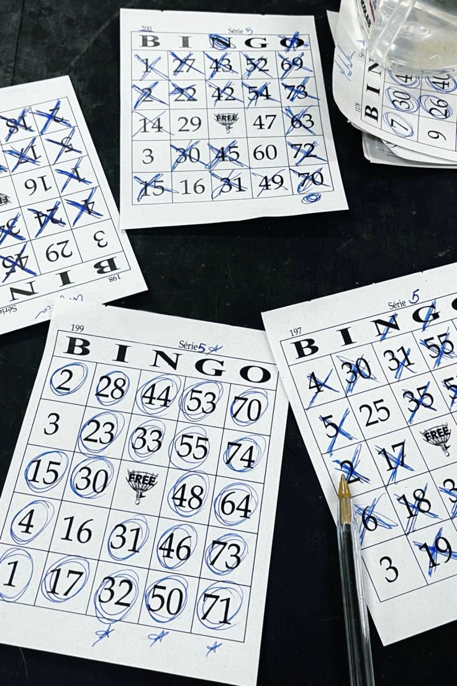
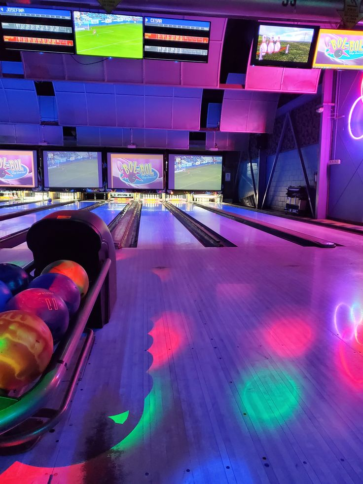

Bingo com amigos
Meus amigos e eu fizemos um bingo com prêmios aleatórios e baratos na casa de uma amiga. Foi um dia muito divertido e engraçado. Eu ganhei um panetone de chocolate e um quebra-cabeça de cachorrinho.
Viagem Praia Grande

Fiz uma viagem para a Praia Grande durante o Ano Novo, acompanhada dos meus irmãos, meu pai, minha prima e meu namorado. Jogamos vôlei na praia, comemos camarão e sorvete, e aproveitamos muito a viagem juntos! Levei várias conchinhas para casa e as colei em um quadro com as fotos da viagem.
Boliche com amigos
Um dos dias mais engraçados das minhas férias foi quando saímos para jogar boliche. Eu e alguns amigos combinamos de nos encontrar na pista de boliche do shopping para nos divertir e competir. Foi muito divertido, mas o ponto alto do dia aconteceu quando a Zanirato, empolgada demais ao lançar a bola, escorregou e, de alguma forma, acabou caindo dentro da vala da pista! Nós rimos tanto que tivemos que fazer uma pausa para nos recompor.
Apesar do susto (e da vergonha dela), continuamos jogando, e a Zanirato acabou fazendo um strike logo depois, o que salvou o dia para ela! Foi uma experiência inesquecível e cheia de risadas.